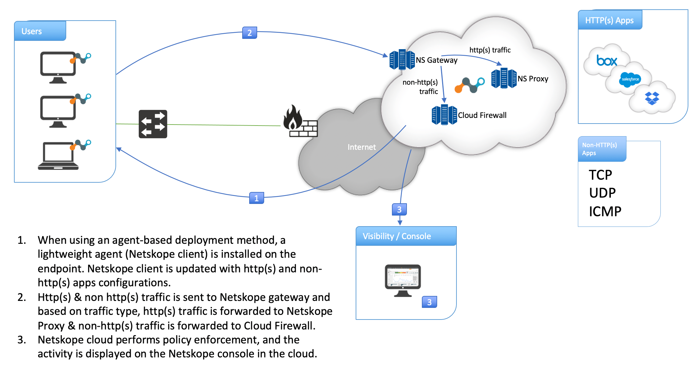
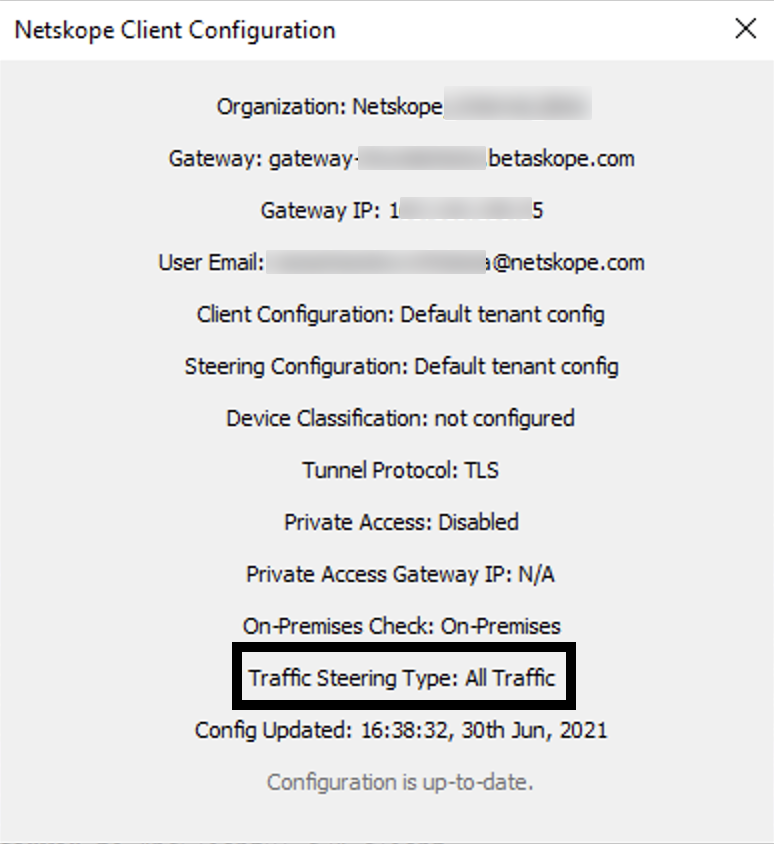

Netskope Client Support in Cloud Firewall
Netskope client is an agent-based deployment method where a lightweight non-intrusive agent is installed on the endpoint. The Netskope client provides the most comprehensive coverage as they can be installed on managed devices to provide visibility and policy enforcement for devices that are both on-premises and remote (off network).
The Netskope client steers the traffic from the users' device to the Netskope cloud based on certain rules and policies. HTTP(S) and non-HTTP(S) traffic is sent to Netskope gateway and based on traffic type, HTTP(S) traffic is forwarded to Netskope Proxy and non-HTTP(S) traffic is forwarded to Netskope Cloud Firewall. Netskope cloud performs policy enforcement, and the activity is displayed on the Netskope console in the cloud.
This article focuses on steering the non-HTTP(S) traffic to the Netskope Cloud Firewall.
A typical Netskope Cloud Firewall network diagram (with Netskope client) is as follows:
|  |
Netskope Client (with Cloud Firewall) Supported Operating System
Netskope client (with cloud firewall) supports the following operating systems:
Windows 10 or later
Note
Netskope client (with cloud firewall support) does not auto-download from the Netskope tenant. You can download the client from the Netskope support site located here (requires a login). Contact Netskope support or sales representative to enable cloud firewall on your tenant.
If you have a older version of Windows , refer Netskope Client Dynamic Steering, Fall Back, and Fail Close Behavior.
Configure Netskope Client to Steer Non-HTTP(S) Traffic
To configure Netskope client to steer non-HTTP(S) traffic to Netskope Cloud Firewall, follow the steps below:
Set Traffic Steering to All Traffic
Netskope client needs to steer HTTP(S) as well as non-HTTP(S) traffic to the Netskope cloud. To set the traffic steering option, follow the steps below:
Log in to the Netskope tenant UI.
Navigate to Settings > Security Cloud Platform > Traffic Steering > Steering Configuration.
Click the Default tenant config entry.
On the top-right, click EDIT and set the Traffic Steering option to All Traffic.
Click Save.
Create a Firewall App and Real-time Protection Policy
Then, you can create an App Definition, followed by a Real-time Protection policy. Click the following links to go to the respective procedure:
Configure Steering Exceptions
If you have a requirement for the Netskope client to bypass certain non-HTTP(S) applications, follow the steps below:
Note
Ensure that you have already created a firewall application from the Settings > Security Cloud Platform > Traffic Steering > App Definition page.
If you have created a firewall application using wildcards (for example, *.xyz.com), the Netskope client bypasses the subdomain entries only (i.e., mail.xyz.com, play.xyz.com), the root domain (i.e., xyz.com) continues to get steered to the Netskope gateway. To avoid this, ensure that you explicitly add the root domain in the App Definition page and include this application in the exception list.
Log in to the Netskope tenant UI.
Navigate to Settings > Security Cloud Platform > Traffic Steering > Steering Configuration.
Click the Default tenant config entry.
Under the Exceptions tab, click the New Exception drop-down list and select Application.
Select the firewall application you created in the App Definition page and click Add.
When the Netskope client is in "All Traffic" mode or cloud firewall is enabled, following traffic is bypassed by default:
DNS
Non-HTTP(S) IPv6
RFC-1918 "Local IP Range" - Netskope client bypasses all the local subnet (as described in RFC 1918) traffic by default. This includes both HTTP(S) and non-HTTP(S) traffic.
Deploy Netskope Client
Documentation on various Netskope client deployment options can be found here
Netskope Client Dynamic Steering, Fall Back, and Fail Close Behavior
A quick definition of the various traffic steering types in Netskope client:
Cloud Apps Only: Steer only selected applications to Netskope gateway for deep analysis.
Web Traffic: Steer all HTTP(S) traffic (port 80 & 443) to Netskope gateway for deep analysis.
All Traffic: Steer all HTTP(S) & non-HTTP(S) traffic to Netskope gateway for deep analysis.
Here are the scenarios under which the traffic steering mode changes automatically:
Dynamic steering based on location: Netskope client traffic steering type changes to "Cloud Apps Only" when the endpoint is on-premise and "All Traffic" when remote.
Netskope client fallback behavior:
Netskope client falls back to "Web Traffic" steering type when Netskope gateway is not cloud firewall-ready.
Netskope client falls back to "Web Traffic" steering type on Windows 7, 8, and 8.1 operating systems.
Older versions of Netskope client fall back to "Web Traffic" steering type when cloud firewall is enabled on the Netskope tenant.
Netskope client fail close behavior:
Netskope client drops both HTTP(S) and non-HTTP(S) steered traffic in "Fail Closed" mode.
Netskope client bypasses exceptions in "Fail Closed" mode.
Netskope client does not drop ICMP traffic in "Fail Closed" mode.
Connected Netskope Client Status
Once the Netskope client is connected to the Netskope gateway, the client configuration window looks like the image below. Notice the Traffic Steering Type is set to All Traffic. It means that the cloud firewall mode is enabled and HTTP(S) & non-HTTP(S) traffic are steered to the Netskope gateway.
|  |